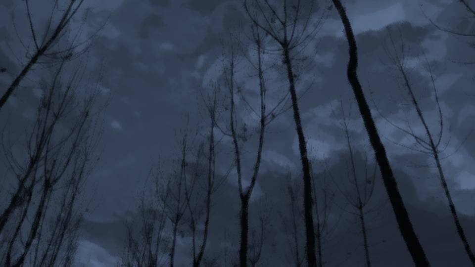
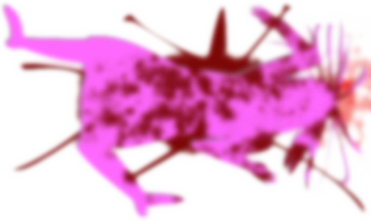
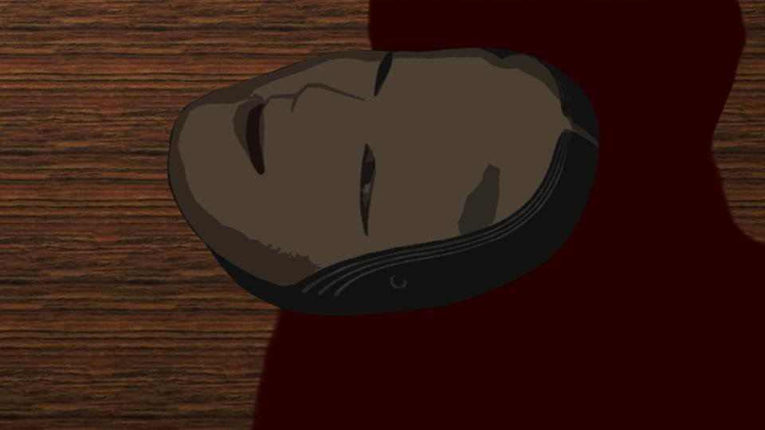
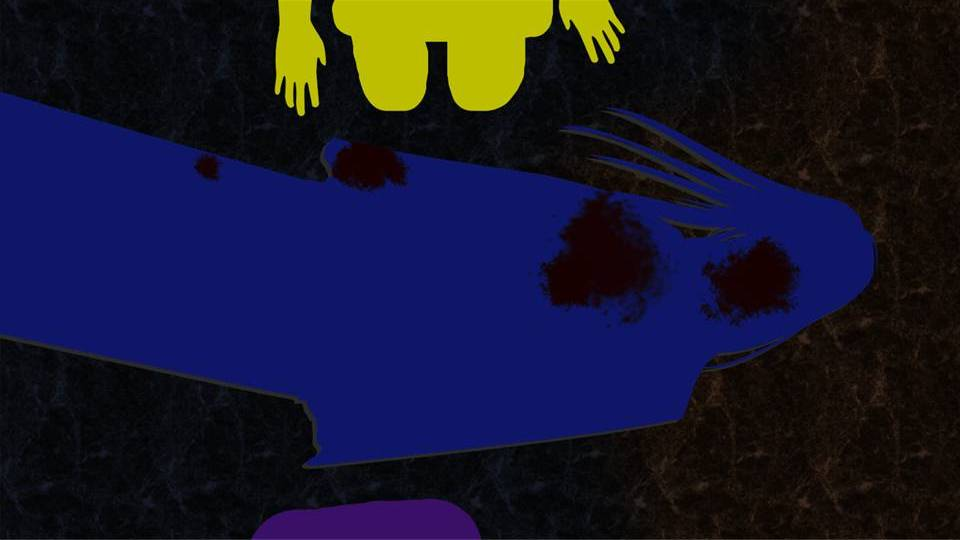
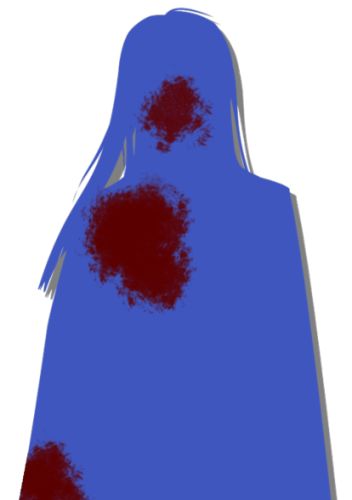
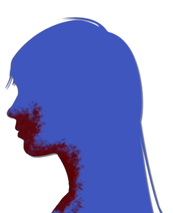
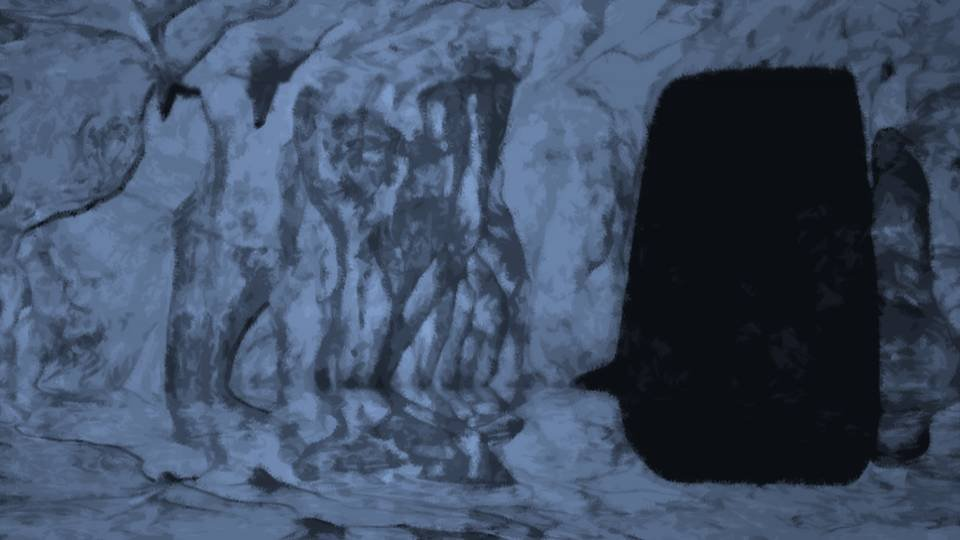
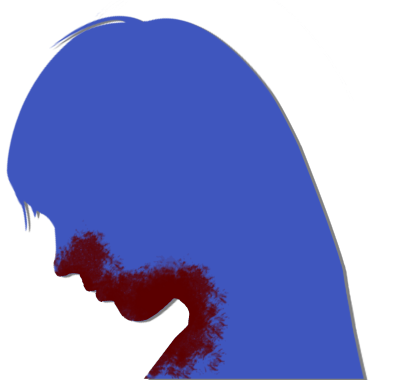

黙示録のラッパ吹き～焦点～


この事件、予想をはるかに上回る複雑さと難解さ、そして常識を覆すものだ。
普通なら信用に値する人であっても、疑ってかからなくてはならない。
そう、今私は、この新村エリカに対して、少なからず疑問を持っている。
不信というよりは、疑問だ。
普通なら信用に値する人であっても、疑ってかからなくてはならない。
そう、今私は、この新村エリカに対して、少なからず疑問を持っている。
不信というよりは、疑問だ。
この集落を統べる長にしては、あまりにもこの事件のことを知らなすぎる。
この人に教えてもらった伝承は、確かに貴重な情報ではある。
ただ、それはあくまで世代を越えて伝えられたことであり、この呪殺事件や死月妖花の件に限られた情報ではない。
この人に教えてもらった伝承は、確かに貴重な情報ではある。
ただ、それはあくまで世代を越えて伝えられたことであり、この呪殺事件や死月妖花の件に限られた情報ではない。
逆に、息子の幸太郎さんは蔵の本からある程度の知識を得ているらしいが……。
この人と幸太郎さんの関係が、どうもうまくかみ合わない。
親子なのは間違いないのだろうけど、あまりにも知っていることに差があり過ぎる。
この人と幸太郎さんの関係が、どうもうまくかみ合わない。
親子なのは間違いないのだろうけど、あまりにも知っていることに差があり過ぎる。

いや、そうとも言えない。
この親子2人を比べた時、呪殺事件絡みの知識に歴然たる差があるのは、今の考察のとおりだ。
では、この2人を集落の人々と比べたらどうなのだろうか。
例えばおばあさんの知識が乏しいのではなく、幸太郎さんの知識があまりにも突出しているとすれば。
そうなると、話は変わってくる。
この親子2人を比べた時、呪殺事件絡みの知識に歴然たる差があるのは、今の考察のとおりだ。
では、この2人を集落の人々と比べたらどうなのだろうか。
例えばおばあさんの知識が乏しいのではなく、幸太郎さんの知識があまりにも突出しているとすれば。
そうなると、話は変わってくる。
幸太郎さんが10年前のチガ姉の発狂を治すために、蔵の本を読みあさったのは理解できる。
それは理解できるのだけど…… 何だろう、この違和感は。
何かがおかしい。
気づけない……この私が、それに気づけない……。
ということは、やっぱりこの違和感は考え過ぎないのかも……。
それは理解できるのだけど…… 何だろう、この違和感は。
何かがおかしい。
気づけない……この私が、それに気づけない……。
ということは、やっぱりこの違和感は考え過ぎないのかも……。
いや、まだ私は肝心なことを知らない。
というか、まだ誰も聞いていないことがある。
というか、まだ誰も聞いていないことがある。
「あの、おばあさん、ちょっと聞きたいんですけど」
「ん？」
「10年前に起きたチガ姉の発狂って、どうして治ったんですか？」
「確か…… ファルシフィカソをサクラに投与したらしい。 翠眼呪殺のことは知っているかね？」
「はい、緑の目を持って生まれた女子は、予知能力を持つ人に殺意を持つって……」
「ん？」
「10年前に起きたチガ姉の発狂って、どうして治ったんですか？」
「確か…… ファルシフィカソをサクラに投与したらしい。 翠眼呪殺のことは知っているかね？」
「はい、緑の目を持って生まれた女子は、予知能力を持つ人に殺意を持つって……」
「その通り。幸太郎はそれを治すために、色々調べていたら、ドローガに感染した者を治す薬に行き当たった」
「でも、どうしてそれをサクラさんの方に……？」
「でも、どうしてそれをサクラさんの方に……？」
「茅萱にファルシフィカソを投与しても安全なのかどうか――。
何しろ、私が生まれる前に書かれた文献だ。そんな昔のことを信用していいのか。
その不安があったから、サクラは無断で自分にファルシフィカソを使ったらしい。
自分の体質を変えることで茅萱を治したんだ」
「確か、ファルシフィカソが有害かどうか、女ケ沢市で実験しようとしたんですよね？」
「ああ、それは美冬さんから聞いたよ。 でも、結局ドローガを使わなかったわけだから、美冬さんの罪を問わなかった。 でも、サクラが私と美冬さんの話を聞いていたみたいでね……。 サクラは私にばれたことだけを聞いてしまい、崖から飛び降りた」
「ああ、それは美冬さんから聞いたよ。 でも、結局ドローガを使わなかったわけだから、美冬さんの罪を問わなかった。 でも、サクラが私と美冬さんの話を聞いていたみたいでね……。 サクラは私にばれたことだけを聞いてしまい、崖から飛び降りた」
その辺りのことは聞いていた。
しかし、サクラさんの方の体質を変えることでチガ姉の発狂を治したのは初耳だ。
しかし、サクラさんの方の体質を変えることでチガ姉の発狂を治したのは初耳だ。
え？
ちょっと待ってよ……。
それは…… どういうこと？
まさか…… あの人……！
ちょっと待ってよ……。
それは…… どういうこと？
まさか…… あの人……！
「おばあさん教えて下さい！」
私はおばあさんの両肩をつかみ、揺らしながら問い詰める。
私はおばあさんの両肩をつかみ、揺らしながら問い詰める。
「どうしてチガ姉は今でもオッドアイなんですか！？
夏菜ちゃんが初潮を迎えたら殺し合いが起こりますよね！？ 何でチガ姉の治療はしないんですか！？」
違和感の正体はこれだ。
いや、最初に気づいていたのかもしれないが、そんなことはずっと記憶の彼方に葬られていた。
違和感の正体はこれだ。
いや、最初に気づいていたのかもしれないが、そんなことはずっと記憶の彼方に葬られていた。
「それは幸太郎の判断だ。
幸太郎は、夏菜の初潮が始まったら夏菜にファルシフィカソを投与するつもりらしいけど……」
「そんなの非効率ですよね！？ だって、最悪初潮から投与までの間にチガ姉と夏菜ちゃんが顔を合わせたら、殺し合いが……！」
「だから幸太郎は茅萱を東京に行かせたんだ。 それなら、年に数日顔を合わせるだけで済む」
「そんなの非効率ですよね！？ だって、最悪初潮から投与までの間にチガ姉と夏菜ちゃんが顔を合わせたら、殺し合いが……！」
「だから幸太郎は茅萱を東京に行かせたんだ。 それなら、年に数日顔を合わせるだけで済む」
「サクラさんにファルシフィカソを使うことで副作用はあったんですか！？」
「私の知る限り、そのようなことはなかったはずだけど……」
「私の知る限り、そのようなことはなかったはずだけど……」
ファルシフィカソの安全性は分かっていたはずだ。
だとしたらチガ姉を治さず東京に行かせるだけなんて、あまりにも遠回りなやり方だ！
夏菜ちゃんの初潮を待ったり、わざわざチガ姉を東京に行かせたり……。
チガ姉の予知能力をギリギリまで使いたいと言うなら分かるけど、東京に行かせてしまったのなら元も子もない。
だとしたらチガ姉を治さず東京に行かせるだけなんて、あまりにも遠回りなやり方だ！
夏菜ちゃんの初潮を待ったり、わざわざチガ姉を東京に行かせたり……。
チガ姉の予知能力をギリギリまで使いたいと言うなら分かるけど、東京に行かせてしまったのなら元も子もない。
いや……チガ姉の予知能力は集落の人たちは知らないんだっけ……。
でも、少なくとも蔵の本を読んだ幸太郎さんは気づいていたはずだ。
それとも『魔女の力』として住人たちに恐れられるから？
だったらタイミングも変だ。
でも、少なくとも蔵の本を読んだ幸太郎さんは気づいていたはずだ。
それとも『魔女の力』として住人たちに恐れられるから？
だったらタイミングも変だ。

最初の呪殺が起きたのはサクラさんが死んだ1年後で、サクラさんが死んだときには既にチガ姉には予知能力が備わっていた。
少なくともサクラさんが死んでから1年間は、予知能力を『魔女の力』と忌避する理由がない。
だからその1年の間でチガ姉にファルシフィカソを与えなかったのは明らかにおかしい。
少なくともサクラさんが死んでから1年間は、予知能力を『魔女の力』と忌避する理由がない。
だからその1年の間でチガ姉にファルシフィカソを与えなかったのは明らかにおかしい。
チガ姉が自身の予知能力について誰にも言っていなかったとしてもだ。
なぜなら幸太郎さんはチガ姉に予知能力があることは知っていたはず。
幸太郎さんは敢えてチガ姉を翠眼のままにしているのだ。
これは非常に危険なことなのに……！
なぜなら幸太郎さんはチガ姉に予知能力があることは知っていたはず。
幸太郎さんは敢えてチガ姉を翠眼のままにしているのだ。
これは非常に危険なことなのに……！

となると……。
怪しいのはおばあさんではない。
幸太郎さんの方だ！ あの人は何かを隠している！
怪しいのはおばあさんではない。
幸太郎さんの方だ！ あの人は何かを隠している！
「まあ、絵梨奈ちゃんの疑問は分かるよ。
でも幸太郎が最も危惧していたのは、茅萱の目の色を住人たちが怪しまないかどうかだ」
「どういうことですか？」
「どういうことですか？」
「翠眼呪殺のことを知っている者はほとんどいないだろうが、絶対とも言い切れない。
何しろ昔からの言い伝えだ。誰かが祖父母辺りから聞いていても不思議じゃないだろ？」
「でも、それならチガ姉が生まれた時に怪しまれるんじゃ……」
「でも、それならチガ姉が生まれた時に怪しまれるんじゃ……」
「当時はそんなことなかったね。
古い言い伝えだから知っていても気にしなかったのかもしれないが……。
でも目の色なんてそう変わるもんじゃない。
それで怪しまれてしまっては、今度は夏菜がどう見られるか」
「正直、腑に落ちないですね……。 ファルシフィカソがあるなら、きちんと治療法があると説明できたと思いますが……」
「正直、腑に落ちないですね……。 ファルシフィカソがあるなら、きちんと治療法があると説明できたと思いますが……」
「そんなふうにうまくいけばいいんだけどね……。
でももし失敗したら……」
「…………」
「…………」

「ほら、着いたよ」
枯れ果てた木々の間から、ぽっかりと口を開けたほら穴――。
おばあさんの話によると、死月妖花の動きによってできた穴だとか。
枯れ果てた木々の間から、ぽっかりと口を開けたほら穴――。
おばあさんの話によると、死月妖花の動きによってできた穴だとか。
幸太郎さんのことをつめて聞く前に、この中を調べてみよう。
露骨に幸太郎さんの疑いをぶつけても、親子である以上かばってしまうかもしれない。
もう少し、判断材料が欲しい。
露骨に幸太郎さんの疑いをぶつけても、親子である以上かばってしまうかもしれない。
もう少し、判断材料が欲しい。

「絵梨奈ちゃん、悪いけど、上から下を照らしてくれるかい？
私が先に下りるから」
「あ、はい」
が、おばあさんは私が照らすよりも先にハシゴを下りていってしまった。
さすがにもう、このハシゴは慣れているのだろうか。
「あ、はい」
が、おばあさんは私が照らすよりも先にハシゴを下りていってしまった。
さすがにもう、このハシゴは慣れているのだろうか。

スムーズな足音の後、下からポッと明かりが見えた。
「下りておいで、ゆっくりね」
おばあさんからの合図で、私もハシゴに足をかける。
錆びついたハシゴと垂直の壁、そして薄暗い底が恐怖心をあおる。
多分、ハシゴの足音のリズムはおばあさんの2倍ほど間隔が開いている。
おばあさんからの合図で、私もハシゴに足をかける。
錆びついたハシゴと垂直の壁、そして薄暗い底が恐怖心をあおる。
多分、ハシゴの足音のリズムはおばあさんの2倍ほど間隔が開いている。

「これは……」
桐箱が散乱している。
それと一緒に2着ほどの赤装束と能面が無造作に捨てられている。
誰かが荒らしたのだろうか。
桐箱が散乱している。
それと一緒に2着ほどの赤装束と能面が無造作に捨てられている。
誰かが荒らしたのだろうか。
「ここには、赤装束や能面を保管していたんだけどね……」
そうか、さっきの集団が死体なら、姿が分からないように変装する必要がある。
だからここから装束や能面を盗み、住人に擬態したわけか。
そうか、さっきの集団が死体なら、姿が分からないように変装する必要がある。
だからここから装束や能面を盗み、住人に擬態したわけか。
「チガ姉を襲った死体が荒らしたんですね……」
「どうやら10着ほど盗られたようだ」
と、おばあさんがそのすぐそばを照らす。
「どうやら10着ほど盗られたようだ」
と、おばあさんがそのすぐそばを照らす。


「絵梨奈ちゃん、いたよ」
いた？
いたということは―― おばあさんの目の前に倒れている人を見て、すぐに分かった。
いた？
いたということは―― おばあさんの目の前に倒れている人を見て、すぐに分かった。

「チガ姉……」
顔や服を血まみれにしたチガ姉が、この薄暗く寒い洞窟の中で倒れている。
ゆらゆらと不安定な灯りが、チガ姉を照らしている。
気を失っているだけなのか、それとも……。
おばあさんはチガ姉の全身に手を当てる。
顔や服を血まみれにしたチガ姉が、この薄暗く寒い洞窟の中で倒れている。
ゆらゆらと不安定な灯りが、チガ姉を照らしている。
気を失っているだけなのか、それとも……。
おばあさんはチガ姉の全身に手を当てる。
「大丈夫、気絶しているだけだ。大した怪我もしていない。
鼓動もあるし、死体なんかじゃないさ」
「よかった……」
あの死体の群れがチガ姉をここに運び込んだのは間違いないようだ。
「よかった……」
あの死体の群れがチガ姉をここに運び込んだのは間違いないようだ。
「ん……」
チガ姉がかすかな声を上げ、身体を動かす。
「チ、チガ姉！ 分かりますか！？」
「五島……ちゃん……？」
どうやら、意識も正常なようだ。
しかし、すぐに起き上がろうとはしない。
起き上がろうとしても、力が入らないように見える。
チガ姉がかすかな声を上げ、身体を動かす。
「チ、チガ姉！ 分かりますか！？」
「五島……ちゃん……？」
どうやら、意識も正常なようだ。
しかし、すぐに起き上がろうとはしない。
起き上がろうとしても、力が入らないように見える。
「チガ姉、これ、食べますか？」
私はポケットからどら焼きなどの和菓子を取り出した。
何があってもいいように、非常食として用意していたものだ。
それを見たチガ姉は、ゆっくりとうなずき、おばあさんの手を借りて身体を起こした。
私はポケットからどら焼きなどの和菓子を取り出した。
何があってもいいように、非常食として用意していたものだ。
それを見たチガ姉は、ゆっくりとうなずき、おばあさんの手を借りて身体を起こした。
チガ姉はよほどお腹が空いていたのか、無言でどら焼きをむさぼり、同時に別のお菓子の包装を破く。
この極限状態なのだから、身も心も疲れ果てているはずだ。
チガ姉には、十分な休養を取らせないと。
この極限状態なのだから、身も心も疲れ果てているはずだ。
チガ姉には、十分な休養を取らせないと。

「はあ……ありがとう、五島ちゃん……」
チガ姉が顔を上げ、私の方を向く。
チガ姉が顔を上げ、私の方を向く。
あれ？
これは…… 灯のゆらぎのせい？
チガ姉の目が……。
これは…… 灯のゆらぎのせい？
チガ姉の目が……。
「あの、チガ姉……」
「ん？」
「目が……」
「目？」
「目が…… 両方、青ですよ……？」
「え？」
スマホでチガ姉の顔を接写し、そのまま見せる。
「ん？」
「目が……」
「目？」
「目が…… 両方、青ですよ……？」
「え？」
スマホでチガ姉の顔を接写し、そのまま見せる。
「ん……これで……
死月妖花の脅威が1つなくなったのね」
「脅威……？」
「ん……五島ちゃん、廃屋に行ったみんなを救出する！ もう、死月妖花は私の五感は分からないから！」
「救出って……！ チガ姉はそこが安全だから案内したんじゃ……」
「脅威……？」
「ん……五島ちゃん、廃屋に行ったみんなを救出する！ もう、死月妖花は私の五感は分からないから！」
「救出って……！ チガ姉はそこが安全だから案内したんじゃ……」
「廃屋の辺りには多くの死体が徘徊しているはず！ 早くしないとみんな殺されてしまうわ！」
「じゃあ、どうしてチガ姉は廃屋に……」
「歩きながら説明するから！」
チガ姉は立ち上がりハシゴに手をかけた。
「じゃあ、どうしてチガ姉は廃屋に……」
「歩きながら説明するから！」
チガ姉は立ち上がりハシゴに手をかけた。
「待ちな、茅萱！ お前には別のことをしてもらわないといけないんだ！」
「ん……別のこと……？」
「アバドン――死月妖花の本体がいる場所が分かったんだ。 糸姫山へ向かってほしい」
「おばあさん、でもそこって、徒歩で2時間もかかる山道なんじゃ……。 それにチガ姉の体力だって……」
「ん……別のこと……？」
「アバドン――死月妖花の本体がいる場所が分かったんだ。 糸姫山へ向かってほしい」
「おばあさん、でもそこって、徒歩で2時間もかかる山道なんじゃ……。 それにチガ姉の体力だって……」
「ついてきな」
おばあさんはそのまま、洞窟の奥へと消えていった。
「チガ姉……」
「ん……五島ちゃん、先に行ってて。 ちょっと立ちくらみがするから、少しだけ休んでから行くわ」
「それなら待ちますよ……」
「ん……いいの、先に行って。 大丈夫、勝手に廃屋に行ったりしないわ」
おばあさんはそのまま、洞窟の奥へと消えていった。
「チガ姉……」
「ん……五島ちゃん、先に行ってて。 ちょっと立ちくらみがするから、少しだけ休んでから行くわ」
「それなら待ちますよ……」
「ん……いいの、先に行って。 大丈夫、勝手に廃屋に行ったりしないわ」

チガ姉に背中を押され、ひとまず私とおばあさんで奥へ行くことになった。
――先の方から足音が響いている。
おばあさんはだいぶ先の方へ行ったようだ。
「ん？」
――先の方から足音が響いている。
おばあさんはだいぶ先の方へ行ったようだ。
「ん？」
通路の横に開けた空間。
そこの岩壁をわずかな水滴が流れ落ちている。
岩壁は水の浸食を受けているようで、私が立っているところにも水滴が飛び散った跡もある。
まるで大きな滝でもあったかのような痕跡だ。
そこの岩壁をわずかな水滴が流れ落ちている。
岩壁は水の浸食を受けているようで、私が立っているところにも水滴が飛び散った跡もある。
まるで大きな滝でもあったかのような痕跡だ。
と、ギギギと金属のこすれる音が聞こえる。
とりあえず先を急ごう。
とりあえず先を急ごう。

鉄格子の扉が開けられている。
おばあさんがここを開けたのだろうか。
この奥に、何が……。
おばあさんがここを開けたのだろうか。
この奥に、何が……。

「行き止まり……？」
「そうみたいだね。 しかし、ここは猛き音を出す怪物――死月妖花やアバドンと呼ばれている怪物が作った洞窟だ。 この洞窟は必ず、死月妖花に繋がっているはずだ」
「そうみたいだね。 しかし、ここは猛き音を出す怪物――死月妖花やアバドンと呼ばれている怪物が作った洞窟だ。 この洞窟は必ず、死月妖花に繋がっているはずだ」
死月妖花は菌類だから、菌糸があった場所にはこのような空洞が出来上がる。
想像を絶する大きな生物なのだから、菌糸だって常識はずれに大きい可能性もある。
しかし、この行き止まりらしき場所のどこに、死月妖花に通じる道があるのだろうか。
想像を絶する大きな生物なのだから、菌糸だって常識はずれに大きい可能性もある。
しかし、この行き止まりらしき場所のどこに、死月妖花に通じる道があるのだろうか。
「でもおばあさん、死月妖花のところに行って、何をすればいいんでしょう？
まだ何の対策もないのに……」
「さっきの伝承、覚えているかい？ 『死者黄泉出で尋常ならざる妖花立ち並ぶ。死体となりし人々もまた妖花となり黄泉出でる』 ――この伝承にはまだ続きがあってね」
「さっきの伝承、覚えているかい？ 『死者黄泉出で尋常ならざる妖花立ち並ぶ。死体となりし人々もまた妖花となり黄泉出でる』 ――この伝承にはまだ続きがあってね」
「ただ翠眼のみが打ち勝つ。
翠眼となりし人々、妖花を枯らし死者を黄泉に返す。
子孫は必ず面と血色の装束をまとい抗うべし」
翠眼……？
ということは、緑の目を持つ者が死月妖花を制することができる……？
だからチガ姉を死月妖花の元へ向かわせる、と……。
しかし、チガ姉は先ほどのように目の色が……。
翠眼……？
ということは、緑の目を持つ者が死月妖花を制することができる……？
だからチガ姉を死月妖花の元へ向かわせる、と……。
しかし、チガ姉は先ほどのように目の色が……。
――と、そこへ足音が響く。
どうやらチガ姉が追いついてきたようだ。
どうやらチガ姉が追いついてきたようだ。
「ん……分かったわ、おばあちゃん。私、行くわ。
五島ちゃんは、家に戻ってて」
「待ってください！ チガ姉の目の色は……」
「ん……おばあちゃん、お願い、廃屋から夏菜を連れてきて。夏菜なら、まだ緑の目なはずだから。 私はこのまま、ここから死月妖花のところへ向かってみる。 ちゃんと通れるかどうか、確認してみないと」
「待ってください！ チガ姉の目の色は……」
「ん……おばあちゃん、お願い、廃屋から夏菜を連れてきて。夏菜なら、まだ緑の目なはずだから。 私はこのまま、ここから死月妖花のところへ向かってみる。 ちゃんと通れるかどうか、確認してみないと」
「夏菜は廃屋にいるんだね？」
「ん……春花も叔母さんもなつみちゃんもいるはず。 でも、気を付けて、死体が見張ってるかもしれない」
「ん……春花も叔母さんもなつみちゃんもいるはず。 でも、気を付けて、死体が見張ってるかもしれない」
「分かったよ、こんな危険なことは絵梨奈ちゃんにさせるわけにはいかないからね。
じゃ、早いところ行ってくるよ」
「あの……おばあさん……」
「ん？」
「気を付けてください、エリカちゃん……」
「ん……エリカちゃん……？」
「あの……おばあさん……」
「ん？」
「気を付けてください、エリカちゃん……」
「ん……エリカちゃん……？」
「大丈夫だよ絵梨奈ちゃん、これでも、そこら辺の男には負けやしないさ！」
そう言い残して、エリカちゃんは去っていった。
死体の脅威がどれほどのものか分からないが、チガ姉は目の当たりにしたはず。
本当に、エリカちゃん1人で大丈夫だろうか。
そう言い残して、エリカちゃんは去っていった。
死体の脅威がどれほどのものか分からないが、チガ姉は目の当たりにしたはず。
本当に、エリカちゃん1人で大丈夫だろうか。
「チガ姉、死体って、どんな感じなんですか？」
「ん……私が会ったのは少なくとも普通の人間と変わらないわ。 白い装束を着ていて、口調やしぐさは本人にそっくりだけど、意思は完全に死月妖花のもの。 何より恐ろしいほどの運動能力があるの。私なんかじゃ太刀打ちできないほどに」
「ん……私が会ったのは少なくとも普通の人間と変わらないわ。 白い装束を着ていて、口調やしぐさは本人にそっくりだけど、意思は完全に死月妖花のもの。 何より恐ろしいほどの運動能力があるの。私なんかじゃ太刀打ちできないほどに」
「うう……ゾンビみたいなものかと思ってましたけど、真逆ですね……。
エリカちゃんだけで大丈夫でしょうか……」
「正直、厳しいわね……」
「だったら――」
「ん……五島ちゃん……もう、私たちには手段が残されていないの。 私の今の体力ではとても役に立てないわ。 それに…… 五島ちゃんだって、気づいてるでしょ？ お父さんのこと」
「正直、厳しいわね……」
「だったら――」
「ん……五島ちゃん……もう、私たちには手段が残されていないの。 私の今の体力ではとても役に立てないわ。 それに…… 五島ちゃんだって、気づいてるでしょ？ お父さんのこと」
「…………」
「ん……残念だけど、お父さんは何か隠しているわ」
チガ姉も、同じことを思っていたようだ。
私は幸太郎さんかエリカちゃんが怪しいと思っていたが、エリカちゃんは単に知識の量と方向が偏っていただけ。
「ん……残念だけど、お父さんは何か隠しているわ」
チガ姉も、同じことを思っていたようだ。
私は幸太郎さんかエリカちゃんが怪しいと思っていたが、エリカちゃんは単に知識の量と方向が偏っていただけ。
しかし幸太郎さんはあれだけの情報を知っておきながら、伏せ続けていたのだ。
何かを隠しているのは間違いない。
何かを隠しているのは間違いない。

「ん……多分、お父さんは……。
あら？」
と、チガ姉が壁の方に目をやる。
と、チガ姉が壁の方に目をやる。

大きな石が壁際に置かれている。
その横には、石よりも少しだけ小さな穴。
どうも、最近までこの石で穴をふさいでいたように見える。
穴の中に、何かあるようだ。
その横には、石よりも少しだけ小さな穴。
どうも、最近までこの石で穴をふさいでいたように見える。
穴の中に、何かあるようだ。
「ん……何かあるわね、引っ張り出してみる」
「気を付けてくださいね？」
チガ姉は手を穴の中に突っ込み、そこにある何かを引きずり出す。
「気を付けてくださいね？」
チガ姉は手を穴の中に突っ込み、そこにある何かを引きずり出す。
「うわ……」
小さな悲鳴とともに、思わず口を袖でふさいだ。
小さな悲鳴とともに、思わず口を袖でふさいだ。
能面をかぶせて、ボロボロの赤装束を着たミイラだ。
もしかして、これは……。
もしかして、これは……。
「ん……これが、ヴェルジのミイラ……」
チガ姉は膝をつき、手を合わせる。
「ん……一応、集落のご先祖様だから……」
私もそれに倣い、手を合わせる。
この人が、翠眼ゆえに堪えがたい殺意に駆られ、自殺したトミという14歳の少女。
チガ姉は膝をつき、手を合わせる。
「ん……一応、集落のご先祖様だから……」
私もそれに倣い、手を合わせる。
この人が、翠眼ゆえに堪えがたい殺意に駆られ、自殺したトミという14歳の少女。
どんな思いで自害したのか、想像すらできない。
でも、チガ姉もその殺意を経験した希少な1人だ。
チガ姉には、トミの心中がよく分かるのだろう。
このトミも、死月妖花による支配から解放される時を、今なお待っているに違いない。
が、あまりこうやってのんびりしているわけにもいかない。
でも、チガ姉もその殺意を経験した希少な1人だ。
チガ姉には、トミの心中がよく分かるのだろう。
このトミも、死月妖花による支配から解放される時を、今なお待っているに違いない。
が、あまりこうやってのんびりしているわけにもいかない。

「チガ姉、行きましょう。きっと、この奥に糸姫山へ続く通路があるんじゃないですか？
それと、幸太郎さんはいったい何を隠しているんですか……？」
ミイラが入っていた穴からは、かすかに風を感じる。
どうやら、見た目以上に深い穴のようだ。
ミイラが入っていた穴からは、かすかに風を感じる。
どうやら、見た目以上に深い穴のようだ。
「チガ姉？」
チガ姉は、じっと手を合わせたまま、目を閉じている。
こんな時のお祈りにしては、ちょっと長すぎないだろうか。
チガ姉は、じっと手を合わせたまま、目を閉じている。
こんな時のお祈りにしては、ちょっと長すぎないだろうか。
「五島ちゃん……。
お父さんの話は、またあとでするわ。
今は、早く行かないと。一緒に来てちょうだい」
私も一緒に……？
さっきは私に「家に帰るように」と言っていたのだが……。
私も一緒に……？
さっきは私に「家に帰るように」と言っていたのだが……。
チガ姉も、体力を消耗していて不安なのだろうか。
あるいは、1人で集落にいるよりもチガ姉といた方が安全と思ったのだろうか。
まあいい、ここまで来たんだ。
新村先輩、古郡先輩、一足先に行ってます。
あるいは、1人で集落にいるよりもチガ姉といた方が安全と思ったのだろうか。
まあいい、ここまで来たんだ。
新村先輩、古郡先輩、一足先に行ってます。
Read ✓ Next in this arc →